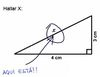

Canal Cuatro
 De: La Frikipedia, la enciclopedia extremadamente seria.
De: La Frikipedia, la enciclopedia extremadamente seria.
| 
|
ATENCIÓN
Este artículo contiene demasiados tachones y en vez de provocar gracia, parece los apuntes de un niño de preescolar. Ya puede ser porque el autor es un novato, bien es un topo sin vista, o simplemente algún n00b que se cree que abusar del chiste mierdoso mola y no se da cuenta que jode bastante el artículo. Así que coge la goma de borrar y entra todas esas rayas para que el articulo deje de parecer una cebra. Si no sabes cómo empezar, mira en la discusión del artículo, puede que te ayude en algo.
|
| De la serie empresas malignas:
|
| Cutreº
|
|
|
| Perteneciente al grupo:
|
Gestevisión Telahinco
|
| Se dedica a:
|
Poner programas de corazón
|
| País de origen:
|
Ejpaña
|
| Año de fundación:
|
2006
|
| Super Presidente:
|
Manu Carreño
|
| Nivel de maldad:
|
No mucha
|
| Empresas absorbidas:
|
No tiene capacidad para absorver
|
| Número de empleados:
|
Pocos
|
| Atentados contra la humanidad
|
Ser comprada por Tele5
|
| ¿Se aconseja trabajar aquí?
|
No
|
| ¿Se recomienda el boicot?
|
El Chino Cudeiro
|
| Cantidad de denuncias:
|
Millones
|
| Sitio web:
|
Página oficial de Cutreº
|
Cuatro es el primer canal que emitio en la televisión española ondas no radioactivas.
Se caracteriza por ser la mujer que marea o Pikachu entre otros de la noticias que ocurran en los planetas Raticulín, Ganímedes y Luna Lunera; Carmen Porter, la mujer de éste y la única que no sé a qué coño narices se dedica; Eva Hache como la comedianta sobrada y engreída que se cree que tiene más gracia que Buenafuente (eso es mentira, pues todos sabemos que tanto el uno como la otra tienen la gracia en el culo) y el individuo ese de los telediários Iñaki Gabilondo encargado de hacerle la pelota a ZP como es debido. Cuatro es una de las cadenas más vistas en Espiña y la favorita en Rusia por su amor al comunismo porque las series eligen cuatro.
Historia
En febrero de tal año, el consejo de administración de Cogecable (empresa propietaria de Canal+ y Digital+) solicita al Conejo de Ministros y con sobornos del PSOE el arreglo de las condiciones suscritas en 1989 con el Gobierno, para eliminar las restricciones de la licencia de televisión analógica con la que opera Canal+, que sólo permitían emitir en abierto durante seis horas con los mismos progrmas de siempre , y poder así hacerlo las 24 horas diarias. Pero como vieron que la programación de Canal+ era demasiado buena para aquellos que no pagaban, por lo que decidieron cambiar la programación de ambos canales, dejando a Cuatro los programas más viejos, absurdos y chorras, y a Canal+ las pelis porno (cambiando el nombre de Canal+ por CanalX ¡La madre que los parió!.
Cobertura infomativa
Como arriba ya se ha aclarado, la cobertura informativa de este canal es muy completa y totalmente organizada. Los servicios informativos se dividen según la horas del día debido a que algunos contenidos, debidamente cotejados podrían herir la sensibilidad de algunos telespectadores. Los servicios informativos de Noticias Cuatro se dividen en:
- Informativo matutino: dirigido por mindundis sin importancia, cuentan noticias que no le importan a nadie y las noticias del día anterior, ya que como
son unos vagos empiezan a las 6 de la madrugada, no ha habido tiempo a que ocurran las noticias del día de hoy.
- Informativo de sobremesa:
para ir abriendo el apetito nos muestran las noticias más truculentas, ya sean masacres en Irak, guerras, maltratos varios, todo, eso sí, con mucho mucho fundamento gore.
- Informativo de la noche:
la Manifiesto comunista para luego deleitarnos con sus alabanzas a lo bien que lo está haciendo todo ZP, para después hablar de la crisis, de lo bien que estaríamos en Rusia,de la crisis, de lo mala que es la Iglesia (en eso lleva razón), de la crisis, de lo malos que son esos ogros los del PP, de la crisis, de las maravillas de la República, de la crisis, de las maravillas del nacionalismo vasco y de la crisis again. La velada se ameniza con más masacres, propaganda política y una lista de asesinos que salen en libertad por fallos aciertos del sistema judicial español.
- Sección depotiva: merece una mención honorífica por
su apología a los matrimonios gays por su calidad informativa en cuanto a deportes se refiere. Además de por haber elegido a grandes profesionales de la información como "Los Manolos". Además, la pasión de "Los Manolos" por apollar (falta ortográfica intencionada) a la selección española de fútbol dieron sus frutos y Espiña se alzó con la Copa de Europa. Tales eran sus ánimos que hasta empezaron a jugarse la vida, véase aquí el video de lo que nunca hicieron
Informativo presentado por el La mujer que marea, Pikachu, Chewaka, Ryuk de Death Note e Ichigo Kurosaki de Bleach, nos traen las mejores noticias traídas de todas partes del universo junto con las soluciones de los grandes interrogantes de la humanidad. Entre los misterios que esta pandilla de imbéciles este grupo de profesionales han resuelto, los más importantes son:
Cotilleos
Como cadena que se precie, Cuatro tenía que luchar por ser la líder indicutible de la telebasura, pero como ese título lo disfruta Operación Triunfo al que llamarían Factor X, en donde unos pringaos luchaban por ser los nuevos Bisbal cantando canciones de El Fari.
Esto también fracasó por la falta de subnormales gilipollas como Evaristo Mejide que dieran caña a "los factorcitos". Al final, hartos de perder el tiempo tan miserablemente, los de Cuatro decidieron poner un debate del corazón lleno de pelotas y sanseacabó.
Viaje a la China de Mao
Sin salir del todo de los cotilleos y las pamplinas, Cuatro apostó por lo que sería el pesado Cuatro por enseñar las maravillas del comunismo. El resultado fue "Pekín Express", un programa que nos lleva a explorar el mundo andandibris hasta llegar a la China de Mao, al parecer Rusia no anda en sus mejores momentos, pero como China también lo es, pues eso que en China, además que todo queda muy bien maquillado con la milenária cultura ancestral de Oriente (jejé).
Podemos ganar la Eurocopa
Esta cadena de water estuvo dando por saco (por no hablar mal) durante todo el transcurso de la Eurocopa 2008 con el slogan de "Poneros", tal fue el éxito que la Selección Española de Balompié que se hizo con tal título. Puesto que la cadena de visión se pensaba que no iban a alzar la copa, los presentadores y demás empezaron a jugarse la vida, aquí el vídeo de lo que nunca hicieron.
Programas que se emiten en Canal Cuatro
- Alta tensión o "Cómo asesinar un programa legendário" por Luis Larrodera.
- Anatomía de Grey, decubriendo su punto G.
- Callejeros: 4 intrépidos reporteros se enfrentan a la amenaza cani. ¿Podrán derrotarla?.
- Cuenta atrás o "Cómo un cantante de capa caída se hace el chulo disfrazado de policía" por Cor
tso
- Dragon Ball: coñazo supino que se convertirá en referente de la animación japonesa.
- Dragon Ball Z más sangre, más vísceras y más acción.
- Dragon Ball GT: la versión edulcorada.
- Dragon Ball X, la versión inédita de esta serie.
- El hormiguero. Presentadores: Trancas y Barrancas, colaborador: Pablo Motos
- Entre frikis una tia buenorra tiene que lidiar con frikis venidos del Más allá.
- Operación Triunfo y nos salió el tiro por la culata", por Miki Puig.
- Cuarto Milenio, los frikis al desnudo.
- Todos aaaahhhhhhhhhhhh... 100. ¡Huy, es verdad, que éste le tiene La Sexta!
- Friends: 6 peligrosos psicópatas viven al lado de tu casa. ¿Acaso crees que puedes escapar?.
- Gran slam o "Metemos un montón de coliseo para que se maten entre ellos", por Miley Cyrus.
- House (Casa) o "La verdadera identidad de Tobi opera sin título de medicina", por el Doctor Vilches .
- Humor Amarillo, ya que estábamos en China le decidimos sacar un poco más de jugo al asunto.
- Joey o "Intento hacer una serie sin argumento para
hundirme hacerme más famoso de lo que soy ya", por Joey Triviani.
- La pantera rosa, rosa rosa gay, rosa rosa rosa gay (cantar con la melodía de "Dragostea Dintei").
- Los Algos o "Como los niños son tontos y se tragan lo que sea, sacaremos dinero haciendo un plágio de Los Lunnis. Mwahahahahahahaaaa", por Mickey Mouse.
- Medium, el plágio de Entre Frikis pero en versión aburrida.
- Money Money o "Metemos un montón de pilinguis en el plató y ya tenemos programa. ¿El argumento? ¿Qué es eso?", por Berlusconi.
- Raruto, si alguien veía Cuatro en sus inicios
estaba tarado era por esto.
- Naruto o "Cómo cargarnos una serie tan buena quitándola su importancia, cambiándola el horário y regalándosela a Telahinco", por Hitler.
- Sorteo de la ONCE: la Lotería en versión barata.
- Sorteo de las DOCE:la Lotería en versión
para ratas para brujas.
- ¿Soy lo que como? Eso depende:si ayer comiste pizza, fuieste una pizza; si hoy comes pollo, hoy eres un pollo, y así.
- Noche Hache intento en vano de plagiar a Buenafuente.
- Noticias pato, presentadas por El Pato Donald (en su imaginación).
- Pato milenio, presentado por El Pato Donald (en sus sueños).
- Pressing Catch, no hay mucho que ver.
- Todo el mundo odia a Chris ¡¿y quién no con lo mala que es esa serie?! ¡¡¡Huy como lo pille!!!.
- Suerte por la mañana, por Timofónica.
- La llamada millonária, por Vomistar.
- La llamada ganadora, por la Frikipedia.
- boy scout, ex-ninja, ex-spetsnaz, ex-shinigami de Bleach, ex-samurai, ex-cani, ex-concursante de Gran Hermano y ex-comandante de la Unidad Fox se enfrenta a grandes desafíos de supervivencia él solo, sin la ayuda de nadie
ni la ayuda del que corta la madera para que se haga una balsa, ni la del que le presta los achiperres justos para cada ocasión, ni la que le prepara las rutas más turísticas y seguras, ni la del que le caza y cocina la comida, etc, etc, etc.
- dueños de perros malos para domarlos.
- Stargay: lo único que echan ahora. Trata de una panda de colgaos que se fuman una cosa caída del espacio con la que flipan en colores y creen poder viajar a otros mundos.
Véase también
Autor(es):
- Krusher
- MURO DE AGUAS
- Frikiman
- Aque
- Grifada
- Bazuke
- Dorian
- Viento
- Jlmme
- Pocholito
Frikipedia 2005-2016, Licencia
GFDL 1.2 - Extraído por FrikiLeaks